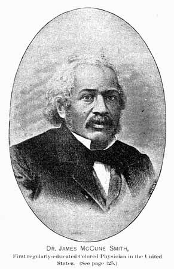

Revolução Americana e a Formação da República dos EUA
CCLHM0081 - História da América independente
2024-08-20
1. Colonia de Povoamento X Colonia de Exploração?
- Ibéricos x Anglos-Saxões
- Clima e geografia
- Origens do “atraso” ou “sucesso” das colônias
2. Inglaterra no século XVII
- Ausência de um projeto colonial sistemático
- Tensões entre a Coroa e o Parlamento, entre nobreza e burguesia
- Tensões religiosas
- Inflação, fome, peste
- Aumento da população
3. Colonos ingleses na América
- Companhias de comércio: empresas privadas e capitalistas
- Órfãos, mulheres pobres
- Servos por contrato (indentured servants)
- Peregrinos (pilgrims) e puritanos: perseguição religiosa
- Escravos africanos
- Crescimento populacional
13 colônias
4. Diferenças regionais
4. Diferenças regionais
Norte
- Clima temperado
- Policultura
- Consumo interno
- Trabalho familiar
- produção de navios
- comércio triangular
- Pesca / Peles
4. Diferenças regionais
Sul
- Clima tropical
- Monocultura (tabaco, arroz, algodão)
- Escravidão
- Mercado externo
5. Transformações do século XVIII
- Explosão demográfica + movimento populacional + busca por terras
- Governos coloniais perdem controle sobre novos assentamentos
- Grande pressão sobre as populações indígenas
- Maior demanda por grãos na Grã-Bretanha e por alimentos em geral no Caribe = aumenta produção, comércio, manufaturas, transporte e comunicações.
5. Transformações do século XVIII
- Reforma colonial com o final da Guerra dos Sete Anos (1763)
- Reorganização do território adquirido da França e Espanha
- Despesas: gastos, juros, exército, marinha
- Aumento de impostos
- Fim da ‘salutar negligência’ (salutary neglect)
6. A resistência dos colonos
- Criação de uma série de leis e impostos que afetavam diretamente a economia das colônias
- Lei do Selo (1765): “ameaça à autonomia colonial”
- Reação: boicote, protestos, motins, violência, jornais, panfletos, clubes
- Filhos de liberdade
- Medidas da coroa pós-1765: tropas, novos tribunais, leis, repressão
6. A resistência dos colonos
- Boston Tea Party (1773): reação à Lei do Chá
- Leis coercitivas (1774): fechamento do porto de Boston, intervenção militar
Nathayel Corrier “Tea sabotage in Boston Port”, 1846
7. Debate imperial sobre política, representação e autonomia
- O Papel da Representação: No centro do debate imperial estava a questão da “representação virtual,” defendida pelos britânicos, que afirmava que o Parlamento representava todos os súditos do Império, mesmo sem representantes eleitos. Os colonos americanos, porém, consideravam essa representação insuficiente e argumentavam que a imposição de impostos sem representação direta era ilegítima, resumindo sua demanda no slogan “no taxation without representation.”
7. Debate imperial sobre política, representação e autonomia
- Diferenças Ideológicas entre Colonos e Britânicos: Enquanto os britânicos consideravam as reformas e impostos necessários para manter o império, os colonos viam essas medidas como um ataque a seus direitos e liberdades. Essas divergências ampliaram o distanciamento entre colônias e metrópole, dificultando a reconciliação e pavimentando o caminho para a independência.
Continua…
Aula 4 - Revolução Americana e a Formação da República dos EUA
28/08/2024
Criação de Governos Informais e o Congresso Continental
Governos Informais Substituindo o Controle Real
- Desintegração do Controle Britânico
- Comitês de Correspondência
Criação de Governos Informais e o Congresso Continental
Formação do Congresso Continental da Filadélfia (1774)
- Primeiro Congresso Continental
- Declaração de Direitos e Agravos
- Organização do Boicote
Novo Tipo de Política Popular e Retórica da Liberdade
Emergência de uma Política Popular
- Ampliação da Participação Política
- Ascensão de Líderes Populares
Novo Tipo de Política Popular e Retórica da Liberdade
Retórica da Liberdade
- Centralidade da Liberdade no Discurso Político
- Impacto da Retórica
Novo Tipo de Política Popular e Retórica da Liberdade
Ampliação da Arena Política
- Inclusão de Novos Grupos
- Movimento de Resistência Unificado
A Declaração de Independência
O Segundo Congresso Continental
- Contexto e Função
- Decisões Cruciais
A Declaração de Independência
Ações Militares em Boston
- Cerco de Boston
- Mobilização Popular
A Declaração de Independência
Criação do Exército Continental
- Estabelecimento do Exército
- Liderança de Washington
A Declaração de Independência
Importância da Obra e Ação de Thomas Paine
- Publicação de “Common Sense”
- Impacto Intelectual e Político
A Declaração de Independência
A Declaração de Independência de 1776
- Redação e Influências
- Questões de Escravidão
- Impacto Democrático

Declaração de Independência dos EUA, 4 de julho de 1776
Um Asilo para a Liberdade
É Radical? Em Qual Contexto?
- Radicalismo da Ideia
- Contexto Revolucionário
Um Asilo para a Liberdade
Herança do Pensamento Liberal
- Pensamento Liberal Local e Popular
- Conflito com Autoridades Centrais
A Guerra pela Independência
Constituição dos Exércitos Continental e Britânico
- Exército Continental
- Exército Britânico
Soldados em uniforme durante a Guerra da Independência Americana(1781-1784)
Descrição da fonte
Esta aquarela, criada por Jean Baptiste Antoine de Verger, um oficial francês que lutou na Guerra da Independência Americana, retrata a diversidade dos soldados que participaram do conflito. Da esquerda para a direita, a imagem mostra um soldado negro do Primeiro Regimento de Rhode Island, um miliciano da Nova Inglaterra, um atirador de fronteira e um oficial francês. O Primeiro Regimento de Rhode Island foi uma unidade composta por 197 homens negros comandados por oficiais brancos, considerada uma unidade de elite que participou de batalhas significativas como a Batalha de Rhode Island e o Cerco de Yorktown.
Informações Principais da Fonte
- Título: Soldiers in Uniform
- Artista: Jean Baptiste Antoine de Verger, 1762-1851
- Data de Criação/Publicação: Williamsburg, Virginia: [1781 a 1784]
- Resumo: Esta aquarela faz parte do diário ilustrado de Jean Baptiste Antoine de Verger, que lutou na Guerra da Independência Americana como subtenente em um regimento francês. A obra pertence à Coleção Militar Anne S.K. Brown da Biblioteca da Universidade de Brown.
Informações Principais da Fonte
- Coleção: Anne S.K. Brown Military Collection
- Fonte Digital: Biblioteca do Congresso - Digital ID
- Library of Congress Control Number: 2021669876
A Guerra pela Independência
Desenvolvimento e Consequências da Guerra
- Duração e Desdobramentos
- Consequências
A Guerra pela Independência
Estratégia Britânica
- Objetivo Central
- Desafios
A Guerra pela Independência
O Papel da França
- Apoio Decisivo
- Consequências Diplomáticas
Afro-Americanos na Guerra de Independência: Alistamento e Participação
Lanning, Michael Lee. African Americans in the Revolutionary War. New York: Citadel Press, 2021.
Debates sobre o Alistamento de Afro-Americanos
- Exclusão Inicial:
- No início da guerra, muitos líderes coloniais hesitavam em permitir o alistamento de afro-americanos devido ao medo de revoltas e à crença na inferioridade racial.
- No entanto, a necessidade crescente de soldados, especialmente após as perdas iniciais, forçou uma reavaliação dessa postura.
Debates sobre o Alistamento de Afro-Americanos
- Mudança na Política:
- A oferta britânica de liberdade aos escravos que se juntassem à sua causa pressionou os líderes americanos a reconsiderarem sua posição.
- Eventualmente, afro-americanos livres e até mesmo alguns escravizados foram autorizados a servir no Exército Continental, embora essa decisão tenha sido polêmica.
Utilização e Papel dos Soldados Afro-Americanos
- Papéis em Combate:
- Afro-americanos desempenharam papéis cruciais em várias batalhas importantes, desde a defesa de posições estratégicas até a participação em unidades de artilharia e infantaria.
- Alguns soldados afro-americanos, como Salem Poor, se destacaram pela bravura e habilidade, desafiando as percepções raciais da época.
Utilização e Papel dos Soldados Afro-Americanos
- Unidades Notáveis:
- O Primeiro Regimento de Rhode Island, composto em grande parte por soldados afro-americanos, é um exemplo de uma unidade de elite que participou de combates decisivos, como a Batalha de Rhode Island.
- Apesar da discriminação, esses soldados provaram sua capacidade e coragem, contribuindo significativamente para o esforço de guerra.
Afro-Americanos e o Desfecho da Guerra
- Estratégia Britânica:
- A Grã-Bretanha utilizou promessas de liberdade para atrair afro-americanos para o seu lado, criando regimentos de soldados negros, como o Regimento Etíope.
- Essa estratégia causou divisões entre os americanos e forçou uma maior inclusão dos afro-americanos no esforço de guerra colonial.
Afro-Americanos e o Desfecho da Guerra
- Consequências para os Afro-Americanos:
- Após a guerra, muitos afro-americanos que lutaram ao lado dos britânicos enfrentaram dificuldades, incluindo a reescravização ou a necessidade de emigrar para outras partes do Império Britânico.
- Aqueles que lutaram pelo lado americano também enfrentaram desilusões, pois a independência não trouxe igualdade ou liberdade para todos, com a escravidão continuando no Sul.
O Término da Guerra e a Constituição da República dos EUA
Como a Guerra Termina
- Fatores Decisivos
- Tratado de Paris de 1783

A primeira página da Constituição dos Estados Unidos. Lê-se acima a frase We, the People (Nós, o povo). Link aqui
{kind=link}
O Término da Guerra e a Constituição da República dos EUA
Constituição da República dos EUA
- Formação de uma Nova Nação
- Convenção Constitucional de 1787
- Estabelecimento do Republicismo
- Debates sobre Direitos e Liberdades
Raça e República nos Estados Unidos
Viana, Larissa Moreira. “A América negra em tempo de revolução: Raça e republica nos Estados Unidos (1776-1860)”. Revista de História Comparada 8, nº 2 (2014): 146–65.
Questões Principais do Texto
- Objetivo Central
- Thomas Jefferson
- James McCune Smith
- Contexto Histórico
Quem Foi Thomas Jefferson (1743-1826)
- Contexto
- Visão sobre os Negros
- Impacto
Quem Foi James McCune Smith (1813-1865)
James McCune Smith. Unknown author - This is a scanned image from Recollections of Seventy Years by Daniel Alexander Payne (1811-1893), published in 1888.
{kind=link}
Quem Foi James McCune Smith (1813-1865)
- Contexto
- Abolicionista e Escritor
- Contribuição Intelectual
Thomas Jefferson e a Condição dos Negros na República em Formação
- Visão de Jefferson
- Impacto na República
- Contradições
James McCune Smith: República, Exclusão e Cidadania Negra no Século XIX
- Contraponto a Jefferson
- Visão de Cidadania
- Ativismo e Escritos
De McCune Smith a Thomas Jefferson: Raça e Antirracismo em Debate
- Debate Central
- Raça e Democracia
- Legado do Debate